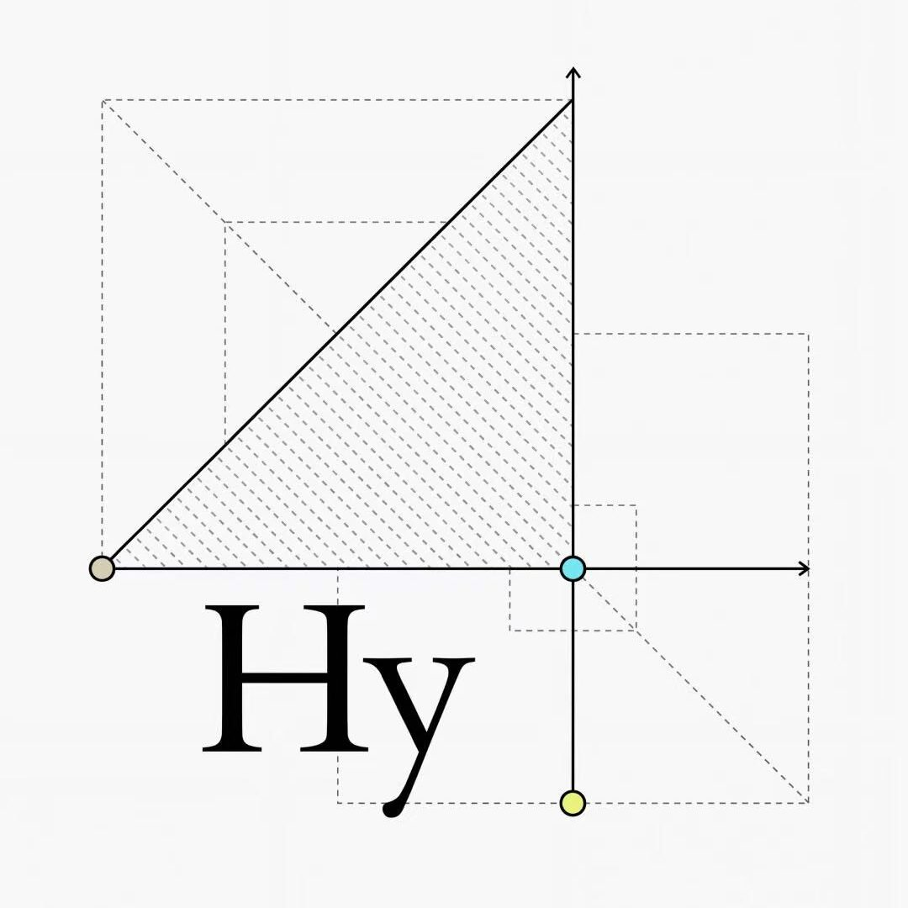
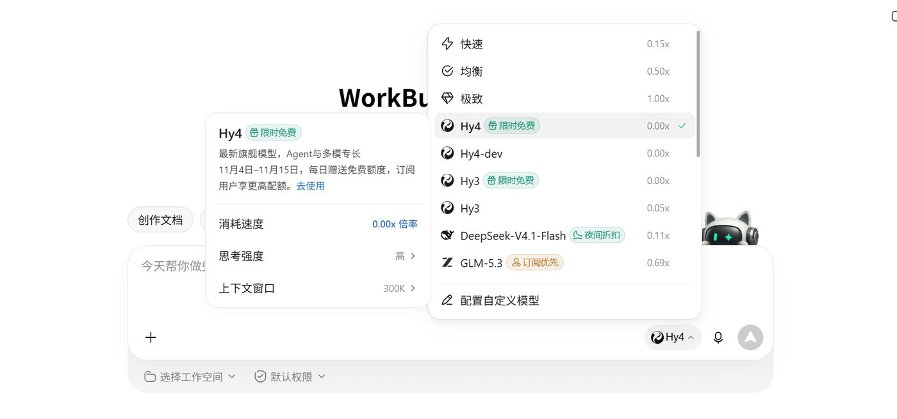
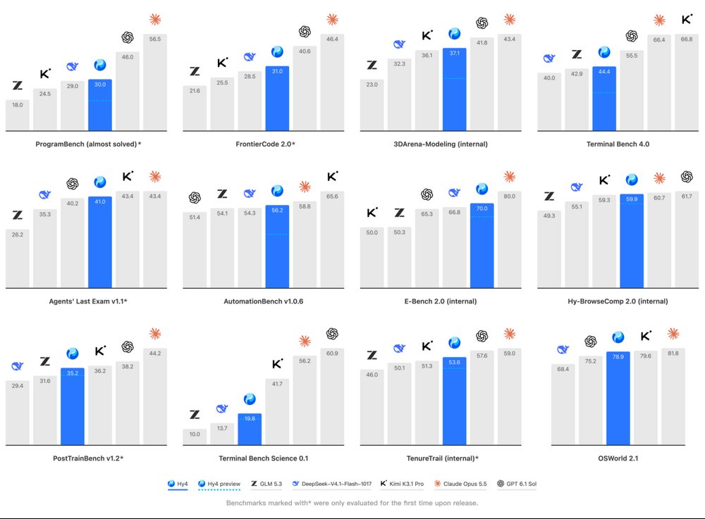
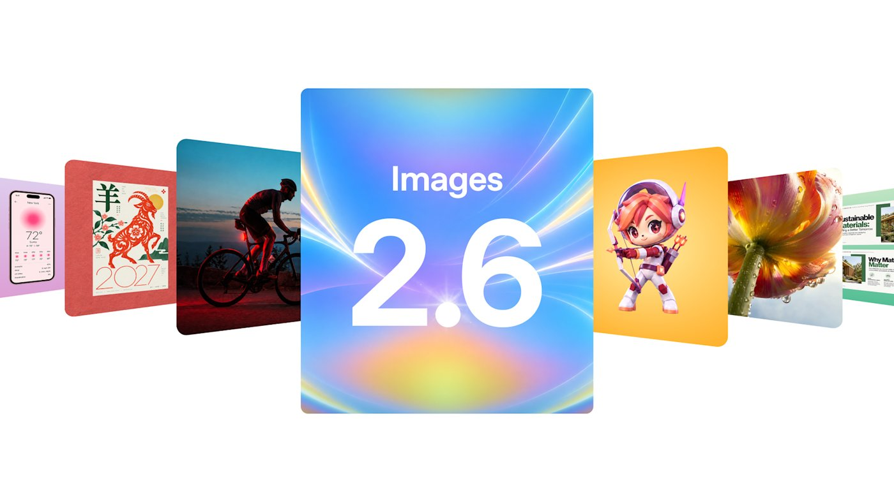
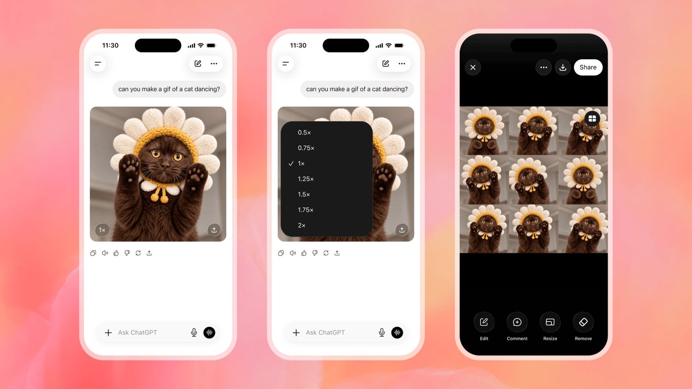
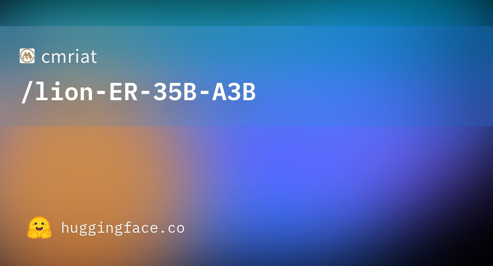
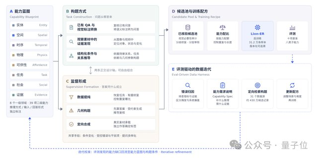

AI 产品情报 · 2026-11-05（周四）
本版覆盖媒体 / 一手源约 18 家（官方/一手 6 · 中文 8 · 外文 4） ：Hy4 一手是腾讯英文新闻稿 + 科创板日报/财新/IT之家；Images 2.6 一手是 OpenAI 博客 + The Verge / TNW，官帖约 37.8 万曝光；国行苹果智能是动点科技/新华网/界面/新浪科技交叉；驭物 Lion-ER 一手是量子位长文 + Hugging Face 模型卡（Apache 2.0）。窗内未见机器之心/晚点专稿，不编造。
今日要点（先看这四条）
腾讯发混元 Hy4 正式版 ：首次视觉理解 + Computer Use；系列约 770B；宣称跻身开源第一梯队，但承认距顶尖闭源仍有差距；权重「未来几天」开源，当天还下不到；API 价不变并打五折促销。OpenAI 上线 Images 2.6 ：ChatGPT 原生出 GIF（可调速、逐帧改）；官方称生图快约 50%；API 分 Flare（快）/ Sunburst（精）；官帖约 37.8 万曝光。Sora 关停后的短动画补位。国行苹果智能开发者 Beta 开测 ：随 iOS 27.3 Dev Beta；Siri/写作/视觉接阿里千问；12 月正式版；不含 WWDC 下一代 Siri AI。实测槽点：发热、续航、权限弹窗打断。招商局狮子山开源驭物 Lion-ER ：35B MoE / 激活约 3B 具身推理 VLM；能力牵引数据引擎；自报十项基准均分 65.29；HF Apache 2.0。对世界模型/具身数据产线极相关。
大厂开源 · Agent 腾讯发布混元 Hy4 正式版：首次视觉理解 + 电脑操作，权重还没放出结论： 这是腾讯混元旗舰从「答题」切到「能看、能点界面干活」的正式版。产品侧已进 TokenHub / WorkBuddy / CodeBuddy / 元宝等；开源叙事强，但正式版权重当天不可下载——只有 8 月的 preview 可下。对世界模型公司：关注它在 Blender/CAD/游戏引擎上的 Computer Use 与 GameDev 专项训练，以及「模型—产品共设计」节奏；别被 770B 数字带跑，关键是可交付的办公/开发闭环与独立评测何时出现。
1. 发生了什么
北京时间 2026-11-04 ，腾讯宣布混元最新一代大模型 Hy4 正式版发布。相对 8 月底的 Hy4 preview：首次引入视觉理解、首次支持 Computer Use（命令行 + GUI），并扩大预训练/后训练。官方称「Hy 首次跻身最强开源模型之列」，同时承认与顶尖闭源仍有较大差距。正式版权重与系统卡计划「未来几天」放出；当天 HF/GitHub 未见正式版仓库。
一手：腾讯英文新闻稿 11-04 · 中文：科创板日报 · 财新 · IT之家 · 对照：OmniaKey 对比表 · preview 权重：GitHub Hy4-preview
2. 产品介绍
规格（媒体/preview 卡交叉）： Hy4 系列约 770B 总参、preview 卡写激活 49B 、上下文 1M 。正式版模型卡未公开，参数以报道为准。
新能力：
视觉理解： 细粒度图像、复杂图表、数学视觉推理；结合工具调用。Computer Use： CLI + GUI；对 Blender、CAD 与跨应用长程任务做专项训练。产品落地： 腾讯云 TokenHub、WorkBuddy/CodeBuddy、元宝、企微智能助理大圆、ima；API 经 OpenRouter / Hermes / OpenCode；QQ、王者、和平精英等持续接入。
官方自报数字（厂商口径）： WorkBuddy 均分 83.18、通过率 96.15%，12 场景中 9 个「国内第一」；金融盲测 Hy4 3.04 vs DeepSeek-V4.1-Flash 2.97 / Kimi K3.1 Pro 2.68 / GLM-5.3 2.68；幻觉率从 preview 12.95% → 7.2%；GameDev +19.1%、GameLogic +9.8%（相对 preview）。
定价： 输入 6 元 / 输出 18 元 / 缓存 0.3 元（每百万 tokens），与 preview 同价；TokenHub 刊例五折至 2026-12-31；WorkBuddy/CodeBuddy 11-04～11-15 有免费额度。Hy4 Flash「近期」发布。

腾讯新闻稿配图——看完应搞懂：这是 Hy4 正式版对外主视觉，不是可下载权重的下载页。

科创板日报配图——正式版叙事核心：能看 + 能操作电脑，开源权重尚未落地。

科创板日报演示向配图——官方强调 WorkBuddy 人机双写与办公闭环。
「最强开源」是腾讯自评；正式版权重未放时，开源排行榜无法计入正式版。独立第三方全量评测本版未见。以上金融/WorkBuddy/GameDev 数字均为厂商或合作方口径。
怎么自己看（15 分钟）
先读
腾讯英文稿 里视觉 + Computer Use + 定价三段 → 再用
OmniaKey 对照 preview vs 正式版「什么能下、什么不能」→ 若要试用：OpenRouter / TokenHub 调
hy4，或 WorkBuddy 免费窗；不要以为 HF 上已有正式版。
3. 导致什么影响（含竞品）
vs DeepSeek-V4.1-Flash / Kimi K3.1 Pro / GLM-5.3： 腾讯自报在部分 Agent/金融任务压过；编程与顶尖闭源仍承认落后 GPT-6.1 Sol、Claude Opus 5.5。选型看你要「开源可自部署」还是「当下最强闭环」——正式版权重未到前，Hy4 更像云上产品模型。vs Claude Computer Use / GPT computer use / 美团 LongCat-2.5： Hy4 把「能看 + 点界面」绑进腾讯办公/游戏生态（WorkBuddy、UE/Unity/Godot），差异在分发与共设计，不单是基准分。vs Hy4 preview（已开源）： 正式版能力升级但权重未放；需要本地跑仍只能用 preview。
对我们（世界模型公司）
可抄三点：① 旗舰迭代用「preview → 正式版 → Flash」节奏，先产品后权重；② Computer Use 专项训 Blender/CAD/游戏引擎——和 3D/世界模型工具链相邻；③ 对外话术诚实写「开源第一梯队但仍落后闭源」。权重放出后再做一次独立对比更新。
4. 用户如何评价
@TencentHunyuan 官帖约 4.3 万曝光 / 1k+ 赞
OpenCode Go 已接入（官帖约 1.5 万曝光）
科创板日报 / 财新 / IT之家同日
窗内量子位未见专稿
正面： X 上开发者强调「能看图表 + 操作 GUI」比 770B 数字更重要；WorkBuddy 灯具 demo、OpenCode 接入速度快；有人拿成本对比称适合 swarm 杂活。批评 / 谨慎： 「权重承诺未兑现」被反复提到；有日文用户称 OpenCode Go 配额远低于 DeepSeek；俄罗斯语帖提醒「营销基准需独立验证」。可信度： 发布事实多家交叉一致；排行与金融分=厂商口径；本地可复现性暂无正式版权重。
生图 · 短动画 OpenAI 发布 Images 2.6：ChatGPT 原生生成可编辑 GIF，官方称快 50%结论： 这是 Sora 关停后，OpenAI 把「短动画」塞回图像工作流的产品动作——不是新视频模型，而是 GIF 成为和静图并列的标准输出。ChatGPT/Codex 全订阅档位可用；API 拆 Flare（快，低质最快约 6 秒）与 Sunburst（精、编辑一致性更好）。对世界模型/游戏向：可当分镜/表情/循环素材的廉价预演层，替代不了可控长视频或交互世界。
1. 发生了什么
美东 2026-11-04 （北京时间约 11-05 早），OpenAI 发布 Images 2.6 ：ChatGPT、Codex 与 API 同步升级。核心卖点：① 原生 GIF（文案或照片→动画，可调播放速度、逐帧编辑）；② 官方称生图速度提升约 50% ；③ API 新模型 GPT-Image-2.6 Flare 与 Sunburst ；④ 参考图可保存复用、markup 编辑进 API、支持 SVG 导出与 complexity 参数。
一手：OpenAI 博客 11-04 · API 图像文档 · 外文：The Verge · TNW · 中文跟进：TechFlow · PANews
2. 产品介绍
谁能用： 全球 ChatGPT / Codex 全档位（桌面、手机、网页）；开发者走 Image API。GIF： API 设 output_format: "gif"；frame_count 2–64（默认 9）、frame_duration_ms 20–2000。编辑端点暂不支持 GIF 输出。Flare vs Sunburst： Flare 偏快迭代与海报/商品布局；Sunburst 偏中高质与跨轮编辑一致性。规模叙事： 官方称 ChatGPT+Codex+API 每周约 40 亿 张图（日均超 5 亿）——厂商口径。

OpenAI 官方社交图——看完应搞懂：Images 2.6 = 更快静图 + 原生 GIF，不是 Sora 回归。

The Verge 配图（源标 OpenAI）——界面可调 GIF 速度并逐帧查看。
怎么自己看（8 分钟）
打开 ChatGPT → 直接说「make a gif of …」或上传照片要求做成循环动画 → 试调速度与逐帧 → 开发者读
图像生成指南 里 GIF 字段表。看完应搞懂：短循环动画已进图像产品，长镜头/物理可控仍不在这层。
相关动态（X 官帖，非页内视频文件）
OpenAI 官帖「Images, upgraded—introducing ChatGPT Images 2.6」约 37.8 万 曝光 / 7.1k 赞 / 638 RT（统计抓取于北京时间 11-05 早）：x.com/OpenAI/status/2118124944928432327 。OpenAIDevs API 帖约 7.7 万曝光。稳定可嵌的独立演示 MP4 本版未抽出；以官方页 GIF 示例与 The Verge 截图为准。
3. 导致什么影响（含竞品）
vs 可灵 / Runway / Luma 视频模型： Images 2.6 的 GIF 是秒级短循环，不是镜头语言长视频；成本与交互路径完全不同。vs Midjourney / Ideogram / 混元生图： 差异在「聊天里直接出可编辑动画 + API markup/SVG」；画质排行本版无独立盲测。vs Sora（已关停）： 媒体明确写成「关停数月后的 GIF 补位」——满足社交短动态，不承诺电影级视频。
对我们
可当「角色表情 / UI 动效 / 分镜预演」的廉价层；世界模型评测仍要 WASD 交互与物理一致性，别把 GIF 热度误读成视频世界模型进展。
4. 用户如何评价
OpenAI 官帖 ~37.8 万曝光
The Verge / TNW 同日
用户已贴 pelican bike 等测试 GIF
中文科技大号多为转述，深度实测少
正面： 「终于不用跳到别的工具做 GIF」；创作者与 OpenArt/Figma Weave 等伙伴引用速度快、品牌一致性。批评 / 空缺： 发布数小时内独立画质盲测未见；GIF 上限帧数/分辨率约束需自己踩；中文侧量子位等未见深度稿。可信度： 产品上线事实扎实；「50% 更快」「40 亿/周」= OpenAI 自评。
消费端 · 中国 国行苹果智能开发者 Beta 开测：Siri / 写作 / 视觉接入阿里千问结论： 这是 Apple Intelligence 在中国大陆的首次实质性落地测试——不是 WWDC 那套下一代对话式 Siri AI，而是「端侧基础能力 + 复杂任务可选跳转千问」的合规方案。12 月随 iOS 27.3 正式推送。对产品经理：重点看「权限弹窗 + 账号登录」如何牺牲连贯性换合规；实测已出现发热、续航、闪退槽点，不宜当主力机日常系统。
1. 发生了什么
北京时间 2026-11-04 凌晨起，苹果随 iOS 27.3 Developer Beta 1 向中国大陆开发者开放国行 Apple 智能 。首批：Siri、写作工具、视觉智能可调用阿里千问 的文本/图像理解与生成；另有实时翻译、照片消除、智绘表情、通知/邮件摘要等。用户可自主开关千问集成；可 Apple 登录或千问账号。计划 12 月 正式版；本轮测试不含 WWDC 2026 下一代 Siri AI；本轮仅 iPhone，国行 iPad/Mac 暂无。
中文：动点科技 · 新华网 · 界面新闻 · 首批实测 · 新浪科技 / 快科技 · 凤凰网转述
2. 产品介绍
机型门槛： A17 Pro 及以上——iPhone 15 Pro/Pro Max、16 全系等；Apple ID 与设备地区均需中国大陆。千问怎么接： 简单问答可走本地/系统能力；复杂任务弹窗询问是否调用千问并可能要求登录；上传图/文档前再次确认；官方称提交内容不用于千问训练。跳转体验： 可点千问 Logo 进千问 App，对话上下文同步（新华网举例：睡眠建议→千问结合运动睡眠记录；视觉识别穿搭→跳转淘宝找同款）。空间： 媒体提醒预留约 ≥15GB（系统包 + 本地模型）。
媒体报道配图——国行 Apple 智能首次开发者预览，正式版排期 12 月。
界面新闻页面相关配图——实测焦点在可用性与发热续航，而非「全面对标海外 Siri AI」。
本版作者未亲自刷 Beta；「发热、续航、闪退、弱网超时、长对话丢上下文」来自界面新闻汇总的多名测试者反馈，属早期 Beta 常见现象，正式版可能改善。
怎么自己看（若有备用机）
免费注册 Apple Developer → 设置里开 iOS 27.3 开发者 Beta → 「Apple 智能与 Siri」开启 → 先试端侧写作/消除，再故意问复杂题触发千问弹窗。看完应搞懂：国行路径是「可选云端扩展」，不是无感海外全功能一键复制。无备用机则读界面新闻实测即可，勿刷主力机。
3. 导致什么影响（含竞品）
vs 海外 Apple Intelligence（含 OpenAI）： 国行用千问补齐生成式能力，隐私/合规弹窗更重；下一代 Siri AI 仍未进本轮。vs 华为 / 小米 / OPPO 端侧+云端助手： 苹果晚两年补课，但分发在存量高端 iPhone；竞争点是「系统级入口 + 电商/生活闭环（千问→淘宝）」。vs 直接用千问 / 豆包 App： 系统级唤起与上下文跳转是增量；深度长任务仍可能回到原生 App。
对我们
消费端「本地小模型 + 云端大模型授权弹窗」会成为中国合规标配。世界模型若做 C 端，提前提设计：哪些推理必须端侧、哪些可云、如何不打断连续操控（WASD/指令流）。
4. 用户如何评价
动点 / 新华 / 界面 / 新浪同日
界面汇总：基础功能可用，续航发热槽点集中
开发者预览，非大众热度峰值
正面： 「终于在国行 iPhone 上能用上苹果 AI」；照片消除、写作、翻译等端侧完成度相对更高。批评： 后台索引发热耗电；第三方闪退/输入法卡顿；千问权限链路打断连贯；弱网易超时；图表/手写识别仍弱；长对话丢上下文。可信度： 上线日程多源一致；体验评价依赖媒体实测汇总，未见大规模样本统计。
具身推理 · 开源 招商局狮子山开源驭物 Lion-ER：35B/激活 3B，能力牵引数据引擎打十项基准结论： 这不是又一个「堆数据」的多模态聊天模型，而是把具身推理拆成 8 域 39 项能力、用评测驱动补数据的 VLM。基座是 Qwen3.6-35B-A3B，HF 上 Apache 2.0 可下；官方自报十项基准等权均分 65.29 （avg@4）。对世界模型/数据生产：方法论（能力蓝图 → 能力编译 → Eval-Driven Harness）比分数更值得抄；独立第三方复现本版未见，HF 下载量尚低。
1. 发生了什么
北京时间约 2026-11-04 ，招商局先进技术研究院下属狮子山人工智能实验室 发布具身推理视觉语言模型 驭物™ Lion-ER-35B-A3B ，并由量子位发长文解读；权重上线 Hugging Face（cmriat/lion-ER-35B-A3B），Apache 2.0，BF16 Safetensors，兼容 Transformers / vLLM / SGLang。
一手/深度：量子位 11-04 18:08 · 模型卡：Hugging Face · 快讯：Techub
2. 产品介绍
架构： MoE，总参约 35B，每 token 激活约 3B；基于 Qwen3.6-35B-A3B 独立微调（非官方 Qwen 发行版）。数据引擎： 能力蓝图（实体/空间/时序/物理/可供性/任务/社会/证据等 8 一级、39 二级）→「能力编译」出题 → 提纯/几何构题/定向合成三条监督 → Eval-Driven Data Harness 用错题反哺下一轮数据。监督样本 312,380 条。自报成绩（avg@4）： 十项均分 65.29；Where2Place 64.28（+9.30 vs 基座）；ERQA 64.38（+6.19）；SAT 89.33；ERQA 轨迹理解 68.18（+12.12）。公开案例题型： 相机转动方向、拔充电器轨迹选择、跨视角挂画方位、寿司卷入锅任务进度——量子位文内有逐步对比基座与 Qwen3.6-27B。

HF 模型社交图——看完应搞懂：可下载的是具身推理 VLM 权重，不是完整机器人策略控制器。
量子位文内「能力牵引数据引擎」示意——方法论核心：能力定义数据，而非数据堆出能力。

量子位文内基准对比图——分数为官方 avg@4 口径，待独立复现。
模型卡写明：未验证用于安全关键或自主机器人控制；基准表现不保证迁移到新环境；训练-测试污染未独立证明。HF「Downloads last month」抓取时显示很低（个位数量级），社区热度仍早期。
怎么自己看（20 分钟）
打开
量子位长文 先读「四道公开基准题目」——看相机转动/轨迹/跨视角/任务进度四例 → 再打开
HF 模型卡 核对均分 65.29 与限制声明 → 有卡再按模型卡 vLLM/Transformers 示例跑 ERQA_155。看完应搞懂：强项是空间-时序-物理问答，不是端到端操控。
3. 导致什么影响（含竞品）
vs 通用 VLM（Qwen-VL / GPT-4o 类）： Lion-ER 明确优化具身题型（相机运动、可供性轨迹、任务进度），不是通用聊天视觉。vs Apollo World / Thinker-Sim / Cosmos Sim-*： 前三者偏仿真世界或车/机器人闭环；Lion-ER 是「看懂再决策」的感知-推理层，可嵌进仿真或真机栈，但不替代物理仿真器。vs 盲目堆 Open-X / DROID： 量子位叙事的差异点正是「能力牵引 vs 堆数据」——对数据生产团队是可执行的流程模板。
对我们（世界模型 / 数据生产）
强烈建议内部分享量子位文中的四步引擎：① 写细能力蓝图（别只写「空间好」）；② 能力编译出题规范；③ 评测失败→区分标注问题 vs 能力缺口；④ 用缺口驱动下一批评测同构新题。可把 ERQA/Where2Place 类题嵌进自家世界模型「文字指令」中间轮验收。
4. 用户如何评价
量子位长文（一手深度）
HF 已挂牌，下载量仍低
独立第三方复现未见
X 英文热度远低于 Hy4 / Images 2.6
正面： 方法论清晰、开源可验证、激活参数小适合边缘；案例题能让非论文读者看懂差距。谨慎： 分数相对基座上涨，跨模型绝对排名需自己跑；真机闭环、工具调用、长程失败恢复仍是「后续计划」。可信度： 发布与开源事实扎实；基准数字=官方自报；社区口碑尚未形成。
今日落选（简述）
魔芯 MoWorld 2.0 （乌镇，昇腾原生 4D 世界模型）——与我们赛道极近，但报道偏通稿/官方自测帧率与成本，缺独立评测与可玩 demo；热度与可验证性不如 Lion-ER，故落选。跟进条件：公开权重/可复现基准或第三方实测。OpenAI 宣布收购 Pierre （Code Storage → Codex）——开发者工具并购，The Verge/官网有稿，非消费级产品发布，深度留给工程雷达。微信 WeVisOne-VL / 阿里云 Qovest / 鲸锐 AI / 曙光 OneBox ——垂类或政企向，窗口内热度与世界模型相关度不足。Apollo World / FlashProve / Hydrogen / Thinker-Sim——已在 11-04 报，无实质新版本。
产品雷达 · 2026-11-05 · 仅供阿汤内部决策参考 · 事实以一手链接为准